證候學 1：風寒在肺證
作者：陳建元
一.定義、說明、如何從脈象上去分辨出是這個證候：
脈象見肺脈的第1層或第1～2層為主軸，有明顯的浮緊脈、浮弦脈或是直線狀態的脈象，再下按時脈象反而不太明顯的，叫做風寒在肺證，風寒在肺證可以伴隨遲脈或不伴隨遲脈。風寒在肺證，是指外感風寒病邪為病機，逗留於肺系的意思。如〈圖2256〉、〈圖2257〉、〈圖2258〉、〈圖2259〉、〈圖2260〉、〈圖2261〉、〈圖2262〉、〈圖2263〉、〈圖2264〉、〈圖2265〉、〈圖2266〉這一些都是。
二.風寒在肺證的外候
肺系外感風寒邪氣，影響上呼吸道、肺系的正常生理運作，所以風寒在肺證的外候表現為惡寒、發熱、咳嗽、咳痰清稀色白、鼻塞、說話鼻音重、鼻涕清稀色白、頭痛、氣喘、眼睛發紅發癢、眼壓升高、血壓升高、筋骨痛、喉嚨疼痛、水腫、皮膚發乾或發癢、苔薄白、脈浮，臨床上若是看到這一系列外候特徵表現時（一項～多項），便要意識到有〝風寒在肺證〞的存在，另外要注意的是，有時候當風寒在肺證只是餘邪或是病人正氣不足的時候，雖然在外候上的惡寒、發熱、咳嗽、咳痰清稀色白、鼻塞、說話鼻音重、鼻涕清稀色白、頭痛、氣喘、眼睛發紅發癢、眼壓升高、血壓升高、筋骨痛、喉嚨疼痛、水腫、皮膚發乾或發癢、苔薄白、脈浮，並不是表現得很明顯，但只要肺脈上有那個脈象的存在，仍然要當成有風寒在肺證來看待。
三.這個病機常在哪些病種中見到：
風寒在肺證，可以在多種疾病中見到，其外候的表現與和治療各有特點，要注意分辨：
1. 感冒：→→→風寒在肺證，表現在感冒時，外候（證）見鼻塞鼻水、咳嗽、頭痛、項背緊痠、筋骨疼痛等感冒症狀。風寒在肺系，干擾正常鼻腔、氣管黏膜的防禦、運作、黏液分佈，所以鼻塞、鼻水、咳嗽、頭痛、項背緊痠、筋骨疼痛。治用麻黃、桂枝、紫蘇、杏仁、炙甘草之類。
2. 喘證：→→→風寒在肺證，表現在喘症時，外候（證）見氣喘呼呼，上氣不接下氣，呼吸有水雞聲（尤其是支氣管哮喘）。肺主肅降，肺受邪扼，功能失常，故喘。治用麻黃、杏仁、蘇子之類（肅降）之類。
3. 慢性鼻炎：→→→風寒在肺證，表現在慢性鼻炎時，外候（證）見原來的慢性鼻炎，忽然加重，又多出咳嗽、頭痛、項背緊痠等感冒症狀。慢性鼻炎者的鼻部本來就不太強壯，一有風寒入侵，最弱的地方往往先受邪，原本的慢性鼻炎上，又疊一個感冒。治用麻黃、蒼耳子之類（引到鼻）。
4. 頭痛症：→→→風寒在肺證，表現在頭痛症時，外候（證）見頭痛。以前感冒沒有徹底治癒，寒氣隨肺氣送入頭部，日久逗留不出，寒氣收引，氣血輸送不暢，引起頭痛。治用麻黃、川芎（引到頭）、細辛之類（止痛）。
5. 筋骨痠痛症：→→→風寒在肺證，表現在筋骨痠痛症時，外候（證）見筋骨痠痛。外感風寒，隨肺氣運送入各部筋骨，氣血輸送不暢，不通則痛。治用麻黃、製草烏之類（引到筋骨兼散寒止痛）。
6. 經痛症：→→→風寒在肺證，表現在經痛症時，外候（證）見經痛。風寒隨肺氣送入下焦，寒氣收引，不通則痛。治用麻黃、烏藥、香附之類（引到下焦兼理氣止痛）。
7. 失音症：→→→風寒在肺證，表現在失音症時，外候（證）見失音。這是因為風寒扼住清竅而音啞。治用麻黃、木蝴蝶之類（開音）。
8. 結膜炎：→→→風寒在肺證，表現在結膜炎時，外候（證）見結膜炎。目症亦有寒證，在結膜炎可以見到風寒在肺證。風寒隨肺氣轉入目系，肺、肝同病，眼睛紅，但痛、淚、分泌物不多。與風熱、風毒型的結膜炎，紅甚、痛、淚明顯，分泌物甚多，表現有別。治用麻黃、防風、夜明砂之類（引到目兼清熱活血）。
9. 水腫：→→→風寒在肺證，表現在水腫時，外候（證）見小便不利和水腫，尤其以頭面和眼瞼較明顯。風寒在肺，肺氣閉塞，肅降無權，水液佈輸發生障礙，可發生水腫和小便不利。治用麻黃、茯苓、車前子之類。
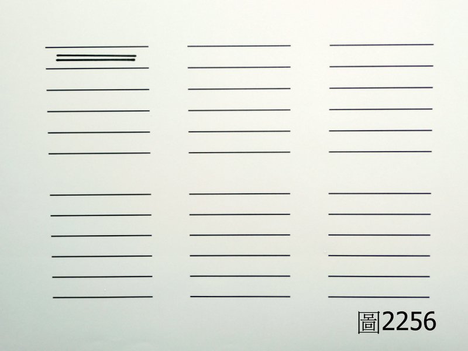
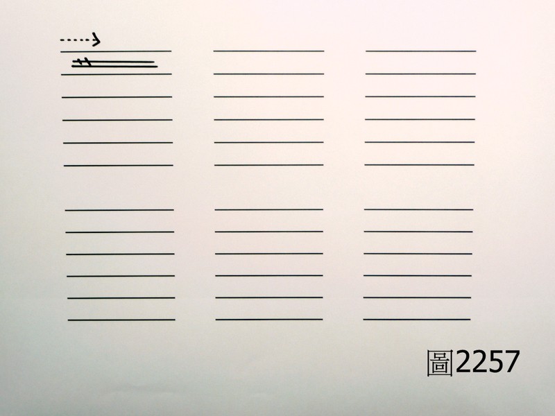
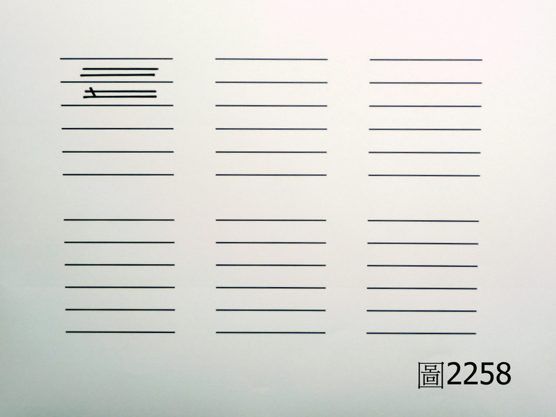
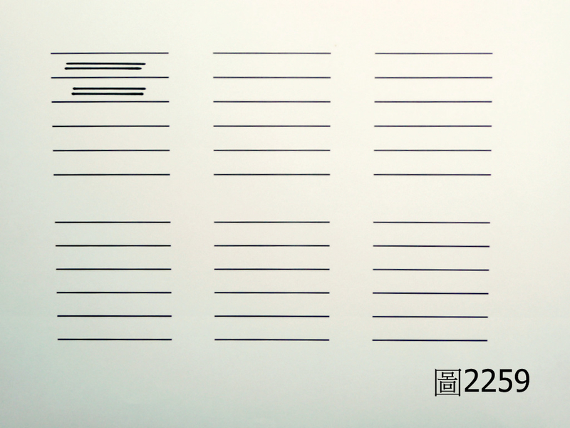
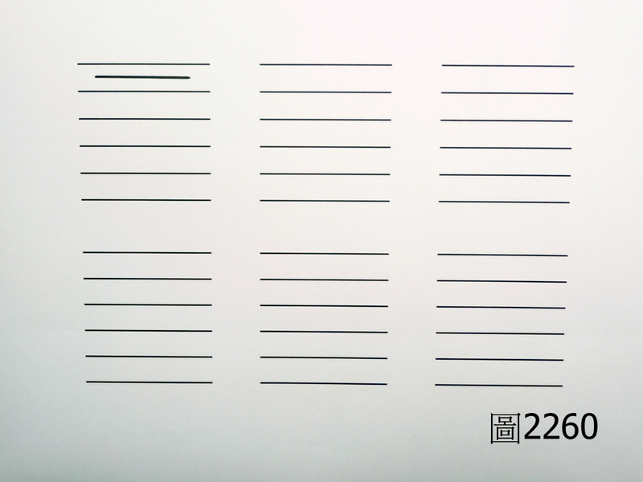
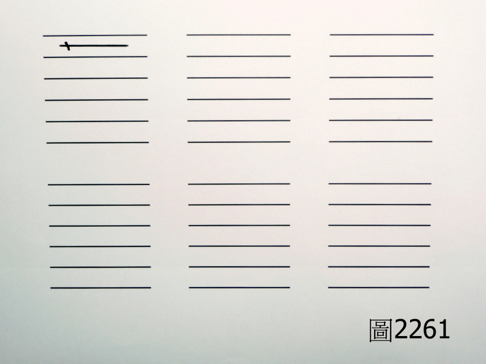
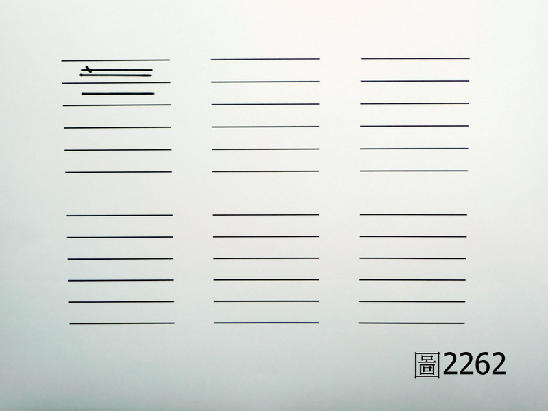
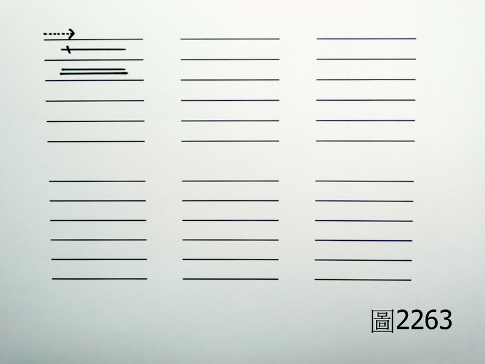
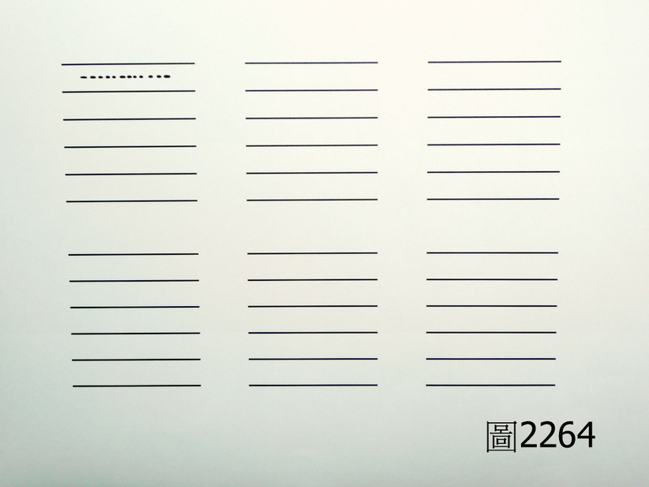
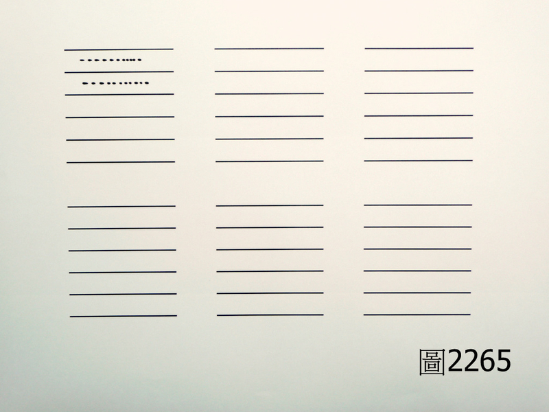
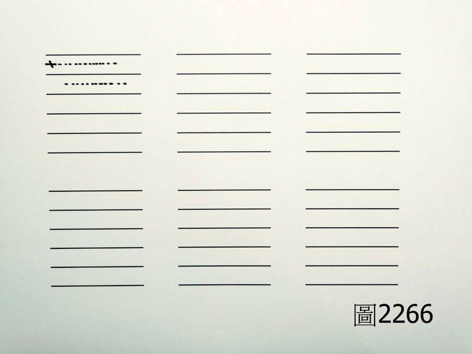【引用請先來信告知徵求同意，若有涉及販售營利等商業行為，版權所有拷貝盜用必究。】
【藥王脈學講壇】http://blog.xuite.net/drjychen/twblog